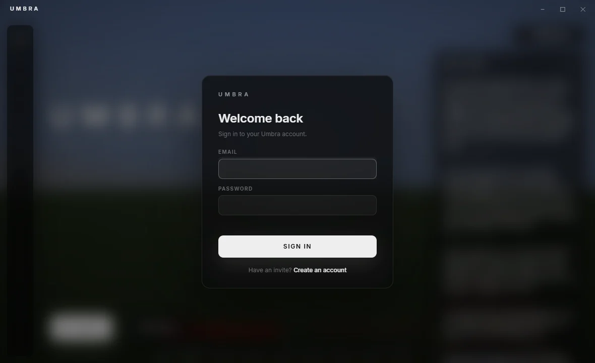
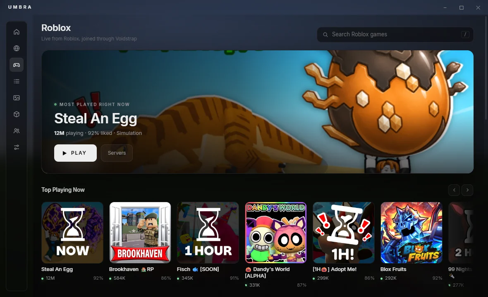

Getting in
You need an invite code from someone who's already in. Then it takes about two minutes.
Run the installer
Download it above and open it. The launcher installs itself and opens.
Create your Umbra account
Choose Have an invite? Create an account, enter your code (it looks like
UMBRA-K7QM-3XPD), and pick a username and password.Add your Minecraft account and press Play
Sign in with Microsoft like the normal launcher. The first Play downloads Minecraft, Fabric, Java and Umbra for you. After that, updates arrive on their own.

If Windows says it protected your PC
The installer isn't signed with a paid certificate, so Windows SmartScreen may stop it the first time. Click More info, then Run anyway.

Roblox, too
The launcher has a Roblox tab: browse what's popular, open any game, and join the exact server you want by players, ping and server FPS.